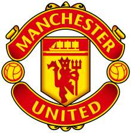

Football Clubs
Where Cristiano played !


Manchester United
Real Madrid
Juventus
First club
Second club
Third club
After a successful season with Sporting that brought the young player to the attention of Europe’s biggest football clubs, Ronaldo signed with English powerhouse Manchester United in 2003. He was an instant sensation and soon came to be regarded as one of the best forwards in the game. His finest season with United came in 2007–08, when he scored 42 League and Cup goals and earned the Golden Shoe award as Europe’s leading scorer, with 31 League goals.
After helping United to a Champions League title in May 2008, Ronaldo captured Fédération Internationale de Football Association (FIFA) World Player of the Year honours for his stellar 2007–08 season. He also led United to an appearance in the 2009 Champions League final, which they lost to FC Barcelona.
Soon thereafter Ronaldo was sold to Spain’s Real Madrid—a club with which he had long been rumoured to want to play—for a then record £80 million (about $131 million) transfer fee. His scoring prowess continued with his new team, and he netted the most goals (40) in La Liga history during the 2010–11 season (his record was broken the following season by his rival Lionel Messi of Barcelona). In 2011–12 Ronaldo helped Madrid capture a La Liga championship and scored a personal-best 46 goals during the League season.
He scored a total of 66 goals in 56 appearances with Madrid and the Portuguese national team in 2013 to earn his second world player of the year award (the FIFA World Player of the Year was renamed the FIFA Ballon d’Or in 2010). In 2014 he scored 52 goals in 43 games and led Madrid to a Champions League title, which resulted in Ronaldo capturing another Ballon d’Or award. In 2014–15 he netted 48 goals to lead La Liga in scoring. Ronaldo netted his 324th goal as a member of Real in October 2015 to become the club’s all-time leading goal scorer. He scored 35 La Liga goals in 2015–16 and helped Real win its record 11th Champions League title, and in December 2016 he won a fourth career Ballon d’Or for his accomplishments.
Ronaldo scored 42 goals for Real across all competitions in 2016–17 and led his team to La Liga and Champions League titles that season, which resulted in a fifth career Ballon d’Or award.
In 2017–18 he scored 44 goals in 44 games, and Real won a third straight Champions League title. In July 2018 he reached a four-year contract worth €112 million (about $132 million) with the Italian powerhouse Juventus.
He finished his Real career with 311 goals in 292 matches.
On his home soil, after moving through the youth and under-21 ranks, Ronaldo had made his first appearance for Portugal’s full national team against Kazakhstan in August 2003 (four days after his debut for United).
He was a key player in Portugal’s fourth-place finish at the 2006 World Cup and became the full-time captain of the national team in 2008. In 2012 his stellar play led Portugal to the semifinals of the European Championship, where his team was eliminated by rival Spain in a match that was decided by a penalty kick shoot-out.
Ronaldo came into the 2014 World Cup hot off of his second world player of the year win, but his play at the tournament was spotty, and the entire Portugal team struggled during a group-stage elimination.
In 2016 he helped Portugal win the European Championship, the country’s first major international tournament title, although he only played sparingly in the final because of a knee injury that he had sustained early in the match. Ronaldo played brilliantly at the 2018 World Cup, scoring four goals in four games as Portugal advanced to the knockout round only to lose its first match of that stage to a strong defensive Uruguay side.